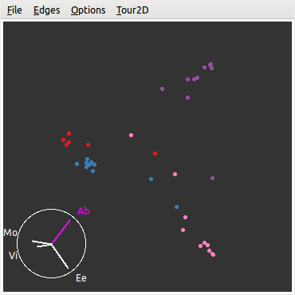
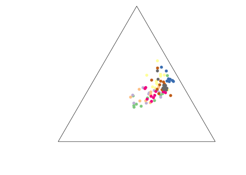

第 6 章 数据
“哦，你还不知道吧？”他笑了，大声说道。“很惭愧，我写了几篇专论，都是技术方面的。比方说，有一篇叫《论各种烟灰的辨别》。此文列举了一百四十种雪茄烟。卷烟、烟斗烟丝的烟灰，并附有彩色插图，以说明烟灰的区别。这是刑事审判中常常出现的重要证据，有时还是案件的重要线索。举例说，如果你断定某一谋杀案系一个抽印度雪茄的男人所为，显然缩小了侦查范围。在训练有素的人看来，印度雪茄的黑灰与‘鸟眼’牌的白灰的区别，正如白菜和土豆的区别一样大。”
— 柯南·道尔《四签名》
本章中我们首先从数据的角度对前文中所叙述的统计图形进行简单的梳理与总结，即：什么样的数据适合用什么样的统计图形展示，以及数据中的信息以怎样的方式表达；然后我们以一些实际数据案例来说明统计图形的应用，这些数据都尽量取自生活，以保证足够的新颖性；最后我们也利用统计模拟生成的数据来说明统计图形的另类价值，即它在解释统计模型中的独特地位。
6.1 数据类型
我们知道统计数据可以分为离散型和连续型两种。所谓离散数据，又称分类数据（categorical data），就是数据的取值范围只是有限个元素的集合，或者可以一一列举的元素的集合，例如性别、民族、国籍等；所谓连续数据，也就是取值范围为一段连续的区间，例如气温、速度、体重等。如本书最早第 2 章所提到的，统计图形要刻画的核心对象是统计分布。对分类数据来说，和分布联系最密切的概念是频数；对连续数据来说，则有很多种可能性，可以是分位数、密度曲线、相关系数等等。下面我们对每种数据类型在不同维度下的图形类型做一个简单概括如表 6.1，注意该表格并非一个完整的作图指引，面对实际数据时，我们仍然需要具体问题具体分析。
| 一维 | 二维 | 高维 | 矩阵 | |
| 分类数据 | 条形图 | 马赛克图 | 马赛克图 | |
| 关联图、四瓣图 | ||||
| 连续数据 | 直方图 | 散点图 | 平行坐标图 | 颜色图 |
| 箱线图 | 散点图矩阵、三维散点图 | 热图 | ||
| Cleveland 点图 | 三维透视图、平滑散点图 | 等高图 | ||
| 一维散点图 | 星状图、符号图、脸谱图 | |||
| 混合数据 | 条件密度图 | 条件分割图 | ||
| 棘状图 |
6.1.1 分类数据
对于分类数据，我们关心的往往是每个分类的频数或者比例是多少，这样的问题通常也都很简单，阅读图形仅仅是用眼睛排序的工作。一维分类数据几乎没有别的选择，我们最常用的是条形图（4.4 小节）；多维数据情况下，马赛克图（4.16 小节）能清晰表达列联表中各个单元格的频数大小，同时也能观察表中的边际概率和条件概率。除了描述性质的图形，我们还可以使用具有推断性质的关联图（4.6 小节）和四瓣图（4.13 小节），前者可以让我们清楚看到如果列联表的行列变量不独立，那么哪些单元格对这个“不独立”的结论贡献大；后者可以让我们很快读出列联表的行列变量是否独立，即扇形环是否有重叠部分。
6.1.2 连续数据
相比之下连续数据的表达方式则要宽广得多：一维情况下，我们可以用直方图和密度曲线展示数据的概率分布，用箱线图以刻画四分位数的方式展示数据的概要（这是粗略的分布表达方式），用 Cleveland 点图表达原始数值的大小，或者用一维散点图同时表达原始数值及其粗略的分布；二维情况下最常用的是散点图，通常用来表达两个连续变量之间的线性或非线性关系，而散点图又常常和其它图形元素结合使用，例如回归直线等；三维情况下我们可以画三维的散点图，后面 6.2.3 小节有示例，对于特殊的三维数据我们还可以画三元图（6.2.8 小节）；更高维情况下，我们有以下选择：
- 寻找载体
- 在二维平面上寻找其它维度的“载体”，这些“载体”有很多可能性，但都是用图形元素的某些属性来附着高维数据，例如符号图中的符号长宽高等（4.26 小节）、脸谱图中的脸部特征（4.35 小节）
- 更改坐标系
- 笛卡尔坐标系理论上只能放二维变量，因此使用其它坐标系也是扩展到高维的自然选择，例如星状图使用的是星状的坐标系，从中心向外的每个分支都是一个坐标（4.23 小节）；平行坐标图也是常见的表达高维数据的工具，它将垂直的坐标系改为平行的，而平面上理论上可以容纳无穷多根平行线，所以平行坐标图理论上也可以放置任意多的变量（4.36 小节）
- 重复二维图形
- 二维的重复也可以达到表达高维数据的目的，例如散点图矩阵就是对所有变量两两重复画散点图，这样所有变量组合的散点图都可以表达在平面上了（4.17 小节）
- 降维
- 把高维数据降为二维数据也不失为一种办法，例如对数据做主成分分析，然后仅仅画前两个成分的散点图；实际上 GGobi 系统的巡游模式也是一种降维（5.4 小节）
6.1.3 混合数据
par(
mfrow = c(2, 2), mar = c(2.5, 3, 2, 0.1), pch = 20,
mgp = c(1.5, 0.5, 0), cex.main = 1
)
x <- sample(rep(1:2, c(12, 18)))
y <- rep(1:2, c(18, 12))
plot(x, y,
main = "(1) 原始散点图", xlim = c(0.8, 2.2),
ylim = c(0.8, 2.2)
)
plot(jitter(x), jitter(y), main = "(2) 随机打散后的散点图 ")
points(x, y, cex = 3)
sunflowerplot(x, y,
main = "(3) 向日葵散点图",
xlim = c(0.8, 2.2), ylim = c(0.8, 2.2)
)
mosaicplot(table(x, y), main = "(4) 马塞克图")图 6.1: 分类变量的散点图示方法示例：原始散点图、打散方法、向日葵散点图和马赛克图。
专门针对混合数据的图形并不多，前面介绍过的条件密度图（4.7 小节）和棘状图（4.22 小节）是两个少见的例子。在绝大多数情况下，我们都推荐使用“条件分割”的办法，利用分类变量的各个取值水平分别画二维图形，这样让我们很容易比较分类变量不同取值水平下的二维变量之间关系的差别。基础图形系统中的条件分割图（4.9 小节）只是一个引子，ggplot2 包中的切片功能更灵活易用。
一定程度上，这种针对数据类型总结图形类型的做法有些死板，例如两个分类变量一般情况下是无法画散点图的，因为分类变量只取有限的几个值，所以两个分类变量之间的散点图通常只是若干个网格点，而这些点本身并不能反映出该位置上真正的频数。我们在第 4 章中提到过一些分类变量的图示方法，包括关联图（4.6 节）、四瓣图（4.13 节）和马赛克图（4.16 节）等，不过它们都不是最直接的散点图，而是将频数表达在其它图形元素中。那么分类变量是否一定不能画散点图呢？当然不是，向日葵散点图和随机打散的散点图就是两种可能。
关于向日葵散点图，在 4.25 小节中已经有详细介绍，这里我们再次强调一下它在展示分类变量散点图上的功效。如 4.25 小节中讲到的，向日葵散点图用向日葵的花瓣表示该处有多少个重复的数据点，而分类变量的散点图大多数情况下都会有重叠的数据点，因此分类变量尤其适合用向日葵散点图来表示。图 6.1(3) 给出了一个用向日葵散点图表示分类变量的示例。
由于分类变量散点图的关键问题是重叠问题，因此我们不妨将重叠的数据稍微“打散”一些，然后再作散点图。关于打散方法，我们曾经在 4.24 小节中用到过，即 jitter() 函数。注意打散过的散点图不能严格按照点的坐标来解读，而是应该按聚集在一处的点的数目来解读频数。图 6.1(2) 给出了一个打散之后的分类变量散点图示例。当然，最自然的选择可能还是马赛克图。我们画图不必墨守陈规，按照需要去考虑应该使用的图形类型即可。
6.2 数据案例
本节中我们通过一些数据实例来说明统计图形的创建过程，以及应用中可能存在的问题。首先我们看一个最简单的数据：猪肉价格。
6.2.1 价格走势
最近几年我们都比较关心物价问题，民间也有不少描述物价上涨的方式，比如作者曾经在邮件中收到一幅“猪肉价格走势图”如图 6.2，这幅图非常生动有趣，但莞尔之余我们不妨细看一下这幅图的横坐标 — 前四根柱子的对应的单位是一年，而后面五根柱子的单位却变成了三个月。虽然图中的小猪作腾飞状，但这幅图本身似乎看不出那么夸张的上涨效果。如果我们按照真实的横坐标单位来重画这幅图，则会看到另一番景象。因为这批数据很简单，我们可以手工录入到 R：
year <- c(2006, 2007, 2008, 2009, 2010 + c(1, 4, 7, 10, 13) / 12)
price <- c(12.11, 18.8, 22.09, 18.39, 19.86, 14.89, 16.68, 18.76, 19.57)这是一个一维时间序列数据，对于时间序列，我们通常会采用折线图来表达数据的波动起伏，观察的核心是数据的大小随着时间的变化，但原图使用条形图实际上也有一定道理。这批数据一共只有 9 个数字，如果只是用折线画图，则整幅图形显得单薄，加上该图的装饰物太多，所以更容易埋没数据。相比之下，矩形条的视觉冲击力较强，更能让读者的注意力集中在数据上。本例中，选取折线图或是条形图取决于具体的应用场景。
图 6.2: 自 2006 年以来猪肉价格的走势图
图 6.3 同时给出了两种图形。横坐标被调整到正确的位置上之后，我们可以看出 2010 年的价格上涨真的如原图中的小猪一样直飞而上。道理很简单，原本三个月的上涨如果被“稀释”到一年中，那么我们当然不会感觉到强烈的上升趋势。图 6.3 给我们另外一点启示是，条形图容易观察差异大小（比较条的长短），而折线图更容易观察斜率大小（升降速度）。
当我们用 R 重画出图形的时候，我们意识到纵坐标可能也存在问题：原图的纵坐标的零点对应的价格是多少？可以肯定并不是 0，这一点通过简单地选取参照物就能判断出来，例如 06 和 07 年的差价大约是 6.7，两年价格条高度之差和 2010 年 4 月的价格条高度差不多，这说明零点可能在 8 元/千克左右。这个零点选择似乎非常随意，通常我们画图会以真实的 0 为零点，或者以数据的最小值为零点，很少选取其它位置为零点。关于零点的选取，我们在 7.1.3 小节中会继续解释。这里我们简要说明一下：如果将零点选在真实的 0 上，那么我们更容易计算真实的比率（高度之比）；若选在最小值上，那么更容易看出绝对变化值（因为差异被“放大”了）。
par(mfrow = c(2, 2), mar = c(4, 4, 0.5, 0.5))
plot(year, price, type = "h", lwd = 5, lend = 1, ylim = c(0, max(price) + 1), yaxs = "i")
plot(year, price, type = "h", lwd = 5, lend = 1)
plot(year, price, type = "o", ylim = c(0, max(price) + 1), yaxs = "i")
plot(year, price, type = "o")图 6.3: 更新后的猪肉价格走势图：上方为条形图，下方为折线图，左侧图形的 y 轴从 0 开始，右侧图形的 y 轴从数据的最小值开始。
6.2.2 末日狂奔
图 6.4: 末日狂奔游戏截图：楼顶左侧的小人为游戏主角，任务为尽力向前跑，一路上可能遇到很多障碍和意外；右上角为奔跑的距离（483 米）。
末日狂奔（Canabalt）是一款速度躲避游戏，操控很简单，点击屏幕控制主角跳起，控制好跳跃力度尽量避开一路上的障碍，不要掉下楼，看最后能跑多远。这款游戏的简单与刺激吸引了很多玩家；此外游戏中还有一定的随机成分，玩家无法预测下一步的场景是什么。由于游戏结束时画面上会提示是否把奔跑的距离发到 Twitter 上，所以 Twitter 上有不少关于这个游戏的得分消息，我们可以抓取这些消息来看各位玩家跑了多远以及玩游戏的平台信息。
MSG 包中的数据集 canabalt 收录了 1208 条这样的数据，数据包括 3 列：得分、死因和游戏平台（iPad、iPhone 和 iPod touch）。
## score death
## Min. : 102 hitting a wall and tumbling to my death:684
## 1st Qu.: 2110 missing another window :243
## Median : 3402 turning into a fine mist : 86
## Mean : 4427 colliding with some enormous obstacle : 40
## 3rd Qu.: 5488 falling to my death : 37
## Max. :40630 missing a crane completely : 22
## (Other) : 96
## device
## iPad :284
## iPhone :735
## iPod touch:189
##
##
##
## 我们关心的重点当然是得分，因此拿到这批数据我们可以先看一下得分的分布，例如用直方图；其次我们会考虑游戏得分和平台是否有关，高分玩家会因为什么原因死亡，等等，这都是基于离散变量的连续变量比较，一个自然而然的选择就是对离散变量的每一分类分别画图。图 6.5 是基于离散变量的不同分类的箱线图，从图中可以看出，iPad 玩家的平均得分较高，这可能是因为 iPad 相比起 iPhone 或者 iPod touch 来说屏幕较大，玩家易于控制，也可能是因为 iPad 需要专门开机，不像另外两个平台随时都能打开玩，因此 iPad 玩家玩起来会更集中精力。至于死因，由于作者对这款游戏并不在行，玩了几次，得到的结果都是因为跳得不够高而撞墙坠落摔死，最多能跑几百米，因此不了解其它死因的场景。因为撞墙摔死的玩家中有很多人得分超高，看来这种障碍的难度并不小。注意我们画箱线图时，对死因做了重新排序 — 按照得分的中位数排序，这样能方便读者阅读这幅图，否则，读者需要额外花费功夫用眼睛对箱线图排序，对读者来说是不必要的阅读负担。按照原始数据的顺序画图尤其是条形图和饼图中常见的问题，其实排序对于制图者只是举手之劳，对读者却能带来很大的方便。
canabalt_g1 <- ggplot(aes(device, score), data = canabalt) +
geom_boxplot() +
coord_flip()
canabalt_g2 <- ggplot(aes(reorder(death, score, median), score),
data = canabalt
) +
geom_boxplot() +
coord_flip() +
labs(xlab = "death")
library(cowplot)
plot_grid(canabalt_g1, canabalt_g2, ncol = 1)
图 6.5: 游戏得分在不同游戏平台以及死因下的比较：iPad 玩家的分数平均较高，得分最高的人最终是因为“错过另一扇窗”而死。
在 canabalt 数据的帮助文档中有这批数据的来源以及收集方式，对抓取网络数据感兴趣的读者不妨看看原作者是如何用 Python 等工具获得数据的。
6.2.3 音乐之声
Cook and Swayne (2007) 中使用了一个关于音乐曲目的数据，它整理了一些曲目的前 40 秒的音频统计量，这批数据也被收录在 MSG 包中，名为 music。数据包含 36 个曲目，其中有古典音乐如莫扎特和维瓦尔第的作品，也有摇滚乐如 Abba 和 Eels 乐队的曲目。这里除了曲目类型（古典或摇滚）之外，我们仅仅使用三个连续变量：左声道频率的均值、最大值和方差。
## artist type lvar lave lmax
## Dancing Queen Abba Rock 17600756 -90.00687 29921
## Knowing Me Abba Rock 9543021 -75.76672 27626
## Take a Chance Abba Rock 9049482 -98.06292 26372
## Mamma Mia Abba Rock 7557437 -90.47106 28898
## Lay All You Abba Rock 6282286 -88.95263 27940
## Super Trouper Abba Rock 4665867 -69.02084 25531## artist type lvar lave
## Abba :10 Classical:16 Min. : 295397 Min. :-98.063
## Eels :10 Rock :20 1st Qu.: 3236492 1st Qu.:-68.120
## Mozart : 6 Median : 6214614 Median : -1.077
## Vivaldi:10 Mean : 17823069 Mean : -8.968
## 3rd Qu.: 16614547 3rd Qu.: 5.376
## Max. :129472199 Max. :216.232
## lmax
## Min. : 2985
## 1st Qu.:15758
## Median :23725
## Mean :22506
## 3rd Qu.:30168
## Max. :32759par(mfrow = c(1, 2), mar = c(4.1, 4.1, 0.5, 0.5))
andrews_curve(scale(music[, 4:6]), xlab = "$t$", ylab = "$f(t)$",
n = 50, col = 1)
with(
music,
andrews_curve(scale(music[, 4:6]),
n = 50, xlab = "$t$", ylab = "$f(t)$",
col = artist, lty = as.integer(type)
)
)图 6.6: 音乐曲目左声道频率的调和曲线图：左图中曲线是否有“拧成股”的现象？右图是否是你真实感受到的聚类？
对这样一批数据，我们关心的问题可能是古典乐和摇滚乐在音频变量上是否有差异。由于这里的变量个数是 3，所以我们可以考虑三维散点图，并用不同颜色标注曲目类型。在真正使用曲目类型这个变量之前，我们不妨对数据做一个简单的探索：试想如果我们并不知道曲目的分类，我们是否能从某些图中看出数据有聚类现象？考虑到古典乐和摇滚乐的区别，以及艺术家风格的不同，这种聚类现象应该是很自然的。对于三个连续变量，我们的选择余地并不大：4.37 小节介绍的调和曲线图可以作为探索聚类的工具。图 6.6 为三个变量的调和曲线图，为了不把预期中的聚类现象强加于我们脑中，首先我们不使用任何方式标注分类信息，统一用黑色，如左图所示，这些曲线的走势是否有扎堆现象？这里我们不想故意引导读者，请读者自行观察。某种程度上，标记和不标记分类变量会对一幅图形产生很大的影响，比如即使一幅图中本来没有聚类现象，但由于我们使用了颜色或其它手段将图形元素分了组，这时我们的眼睛很容易引导我们认为图中存在聚类。看完左图之后再看右图，你的结论有变化吗？右图中虚线表示摇滚，实线表示古典；红色为 Eels，黑色为 Abba，蓝色为维瓦尔第，绿色为莫扎特。从“事后诸葛亮”的角度来说，这些曲目似乎确实存在差异。
library(scatterplot3d)
with(
music,
scatterplot3d(lave, lmax, lvar / 1e6,
pch = 19,
color = as.integer(type), mar = c(2.5, 3, .1, 2)
)
)
library(GGally)
ggparcoord(music, columns = c(4, 5, 3), groupColumn = "type")图 6.7: 音乐曲目左声道频率的三维散点图（上）与平行坐标图（下）：三维散点图中我们难以感知点的位置，平行坐标图则更易读。
调和曲线图展示的并非原始数据，所以即使我们知道有差异，也无法知道差异具体是什么样的。图 6.7 上图为三维散点图，用颜色区分了古典乐和摇滚乐；下图为三个变量的平行坐标图。三维散点图往往被人们视为很能吸引眼球的图形，但本作者倾向于反对使用它，原因是多数情况下我们看到的三维图形都是静态的，不可旋转，而三维图形的外观非常依赖于我们观察它的视角，正所谓“横看成岭侧成峰，远近高低各不同”，这给读图带来了视觉上的限制，此外，三维图形也需要空间想象力，例如我们是否能看清图中每个点在纵轴上的高度？观察三维图形中的数值需要用眼睛对三个垂直的平面做投影，这是一件非常费力的工作。这里顺便提一下，Excel 中可以画三维条形图 / 柱形图甚至饼图，这些图形通常都是非常糟糕的选择。Krause (2009) 是一篇关于三维条形图的短小评论，感兴趣的读者不妨一读。
尽管三维散点图有种种劣势，但在本例中有一点可以肯定，那就是古典乐和摇滚乐在频率上是有差异的，因为我们可以看到图中的散点并没有混杂在一起，而是有着较好的分隔（请再考虑一下这是否是“事后诸葛亮”的结论）。为了看清具体的数值上的差异，我们可以使用平行坐标图如 6.7 下图。古典乐左声道的频率均值相对较高，但最大值相对较低，而且方差非常小，这说明古典乐的演奏频率相对固定在较高的水平上；而摇滚乐的平均频率相对较低，但最大值和方差都很大，这说明摇滚乐的频率波动幅度较大，高方差也可能是因为最大值太大引起的，这似乎让我们不由联想到嘶吼的摇滚歌手，读者若有兴趣，可以用 tuneR 包 (Ligges 2024) 读入信乐团的《离歌》做分析，看是否能看到“低均值高方差”的特征。
6.2.4 绝望主妇
2010 年 8 月 11 日，TV Guide 杂志公布了一批收入最高的电视剧演员名单，数据中包括演员名称、电视剧名称、类别（正剧 Drama 或喜剧 Comedy）、平均每集的收入，随后有人继续整理了演员性别、IMDB （环球电影数据库）评分等信息。这批数据收录在 MSG 包的 tvearn 中：
## actor show pay type
## 34 Charlie Sheen Two and a Half Men 1250000 Comedy
## 35 Jon Cryer Two and a Half Men 550000 Comedy
## 4 Marcia Cross Desperate Housewives 400000 Comedy
## 5 Teri Hatcher Desperate Housewives 400000 Comedy
## 6 Felicity Huffman Desperate Housewives 400000 Comedy
## 7 Eva Longoria Desperate Housewives 400000 Comedy
## 45 Hugh Laurie House M.D. 400000 Drama
## 46 Dan Castellaneta The Simpsons 400000 Comedy
## 47 Julie Kavner The Simpsons 400000 Comedy
## 56 Christopher Meloni Law & Order: SVU 395000 Drama数据中一共有 72 位演员，包括《绝望的主妇》中的 4 位，《好汉两个半》中的 3 位，等等。最高薪酬为每集 125 万美元 — 该演员为《好汉两个半》中的 Charlie Sheen。《绝望的主妇》中的 4 位演员（Marcia Cross、Teri Hatcher、Felicity Huffman、Eva Longoria）的薪酬为 40 万美元，排在并列第 3。
对于这样一批数据，我们关心的核心对象当然是薪酬：除了简单排序之外，它与其它变量的关系是怎样的？例如正剧和喜剧是否有差异、评分和薪酬是否有关系、男女演员的薪酬是否有高低，等等。我们可以用数值的方式回答这些问题，也可以作图。如男女演员的平均薪酬：
# 平均薪酬 pay.mean 以及男女演员数量 pay.number
myfun <- function(x) {
c(mean = mean(x), number = length(x))
}
aggregate(pay ~ gender, data = tvearn, FUN = myfun)## gender pay.mean pay.number
## 1 Female 212391.3 23.0
## 2 Male 195244.9 49.0ggplot(aes(x = pay), data = tvearn) +
geom_histogram(binwidth = 20000) +
facet_grid(gender ~ .)
ggplot(aes(x = rating, y = pay, color = type), data = tvearn) +
geom_jitter() +
geom_smooth(method = "loess") +
scale_y_continuous(
labels = scales::unit_format(unit = "w", scale = 1e-4),
breaks = seq(0, 125, 15) * 10^4
)## `geom_smooth()` using formula = 'y ~ x'图 6.8: 最高收入的男女演员的薪酬直方图（上）：薪酬呈右偏，女演员平均薪酬略高。IMDB 评分与薪酬的关系非线性。
可以看出女演员平均薪酬比男演员略高。图 6.8 上图为男女演员各自薪酬的直方图，可以看出直方图呈右偏趋势，这是由少数演员的薪酬极高造成的；下图为 IMDB 评分与薪酬的关系，我们将电视剧类别用不同颜色标注出来，发现不同类别之间的电视剧薪酬随着评分的变化关系并不相同。图中曲线为 LOWESS 曲线（6.2.7 小节），对正剧而言， IMDB 评分与演员薪酬似乎没有关系，曲线几乎为一条水平线；对喜剧而言，这个关系并非直线关系，评分在 7.9 附近的薪酬最高，此前的薪酬随着评分上升而增加，此后的薪酬则大多回落到 20 万美元以下并再次呈上升趋势。为了理解这些现象背后的原因，我们有必要研究一下 IMDB 的评分机制。据作者的初步了解，IMDB 网站并非简单将用户的打分平均，而是综合考虑诸多用户背景信息而加权得到的评分。为何评分高的喜剧不如评分低的喜剧中的演员薪酬高？是制片公司的问题还是 IMDB 评分的问题？作者并非美剧迷，对这个问题的探索就到此为止，感兴趣的读者可以继续利用数据中的其它变量进一步分析。
当我们对两组直方图进行比较时（实际上是比较两个分布），我们应该如何排列这两幅直方图？图 6.8 中的直方图为上下排列，原因是这样可以很方便比较分布的各个特征，如最小值、最大值、众数、中位数等；如果我们将直方图左右排列，那么这些比较都将变得困难，因为此时眼睛仅仅上下移动是不够的，我们必须先分别看左右横轴的数字，记住数字之后再在脑中对比数字大小。另外，当我们在画散点图的时候，如果能加上某些平滑曲线或回归直线，那么图中的趋势也将变得更加明显，因为谁都无法用眼睛做回归模型或局部平滑，仅凭眼睛去看，容易被各个孤立的点分散注意力。
6.2.5 灌篮高手
2009 年 12 月 25 日，CLE 骑士与 LAL 湖人在洛杉矶 Staples Center 展开一场圣诞大战，最终骑士以 102:87 胜出。我们可以从 http://www.basketballgeek.com 获得这一场比赛的详细数据，甚至包括每一次投篮时球员的在球场上的坐标，这些坐标数据被收集在 animation 包的 CLEvsLAL09 中，同时我们也整理了比赛中的助攻数据放在 MSG 包的 assists 中。
## player time period realx realy result team
## 1 <NA> 12:00 1 NA NA <NA> OFF
## 2 Derek Fisher 11:45 1 11 43 missed LAL
## 3 Derek Fisher 11:44 1 NA NA <NA> LAL
## 4 Derek Fisher 11:41 1 6 25 made LAL
## 5 Mo Williams 11:35 1 NA NA <NA> CLE
## 6 Pau Gasol 11:23 1 14 31 made LAL
## 7 Shaquille O'Neal 11:04 1 82 25 missed CLE
## 8 Kobe Bryant 11:03 1 NA NA <NA> LAL
## 9 Kobe Bryant 10:53 1 13 42 made LAL
## 10 Shaquille O'Neal 10:36 1 88 25 made CLE这里我们需要解释一下，NBA 比赛场地尺寸为 \(94\times50\) 英寸，而数据中的 realx 和 realy 变量是转换过的坐标：假设左半场为骑士（向右半场进攻），右半场为湖人（向左半场进攻），那么 realx 和 realy 分别指的是球员位置离左侧底线和下边边线的距离（单位为英寸）。简单推理可知，对于骑士来说，realx 一定大于 47，湖人则小于 47，例如上面数据中湖人队的加索尔（Gasol）在第 1 节于坐标 \((14,31)\) 处投篮命中。图 6.10 是一幅球场示意图，读者可以对照理解这里的坐标，甚至可以找出图中代表加索尔的点。
library(sna, warn.conflicts = FALSE)
par(xpd = TRUE, mar = c(0, 2.4, 0, 3.2))
set.seed(2011) # 元素位置是随机安排的，设定种子固定它们
data(assists, package = "MSG")
gplot(assists, displaylabels = TRUE, label.cex = .7)图 6.9: 骑士与湖人比赛的助攻网络图：詹姆斯曾为 5 位队友助攻，而奥尼尔不为任何人助攻。
在我们分析坐标与投篮结果之前，我们先看一下这场比赛中的助攻情况如图 6.9；sna 包中的 gplot() 函数可以基于给定的相互关系矩阵很方便作出网络图，如图 6.9 的数据矩阵形式如下：
## x1
## x2 Anthony Parker Anderson Varejao Delonte West J.J. Hickson
## Anthony Parker 0 0 0 0
## Anderson Varejao 0 0 0 0
## Delonte West 0 1 0 1
## J.J. Hickson 0 0 0 0
## LeBron James 1 0 1 0
## x1
## x2 LeBron James
## Anthony Parker 0
## Anderson Varejao 0
## Delonte West 1
## J.J. Hickson 0
## LeBron James 0West 为 Varejao、Hickson 和 James 各助攻 1 次，James 为 Parker 和 West 各助攻一次。数据中一共有 22 位球员，因此完整数据矩阵维数为 \(22\times22\)。网络图能让我们很快看出比赛中的助攻关系，图中两个“聚类”显然分别是骑士和湖人的队员。总体来看，骑士队内部助攻次数较多，助攻网比较大，但也有些特立独行的球员如“大鲨鱼”奥尼尔（中锋），他在这场比赛里没有为任何人助攻。湖人队依然是以科比为中心，这一点想必没有读者会觉得惊讶。据说因为莫·威廉姆斯在雄鹿队的时候不爱给易建联传球，所以中国球迷给他取名“莫不传”，实际上这场比赛中他也是有助攻的。
图 6.10: 投篮坐标与结果的平滑散点图：绝大多数投篮的位置都在篮筐下，湖人投篮次数多但命中率低。
也许是这场比赛骑士队的协作比较好，最终赢了湖人，不过这都是事后分析。我们可以再看看正常比赛中所有投篮的地点如图 6.10，显然这是一幅平滑散点图，颜色越深的区域说明在该地点进行的投篮尝试最多。毫无疑问，几乎所有的篮球比赛都有一个共同特点，那就是大多数投篮都是在篮筐下进行的。湖人进攻时的投篮地点分布相对比较均匀，而骑士的进攻地点则似乎有两处“空白区域”，这很容易让我们考虑，投篮地点和进球结果之间有什么关系？
作者对篮球纯属外行，这里提出的问题也许很愚蠢，不过我们还是对地点进行了左右划分，看从篮筐左侧和右侧投篮和是否进球有没有关系，也许有些球员在篮筐某一侧的进球率较高。首先我们去掉在中轴线上的数据（即 realy 不是 25 的数据），然后看左右侧和是否进球的列联表并作出相应的四瓣图如图 6.11。骑士在左侧投篮 21 次，进球 7 个；右侧投篮 22 次，进球 11 个；湖人的数据可类似解读。图中扇形环都有重叠区域，所以无论是骑士还是湖人，在篮筐左右侧投篮和结果之间并没有显著关联。仅从数字上看，两队都在右侧进球的几率更高（右上角的扇形半径更长）。
本例的数据比前面的例子都大，所以不适合把每一条数据的细节都展示出来，我们需要想办法尽量展示数据的某种概要信息。助攻网络图让我们一眼就能看清球员之间的助攻关系，每个人的贡献都在网络图中显示了出来。篮球场平滑散点图实际上是用低层作图函数和三角函数按照尺寸一点一点勾画出来，在上面叠上一层平滑散点图，让这幅图既能紧扣故事主题，又能展示数据中的信息。四瓣图是对列联表的一种代替，它同时显示了列联表数据和相应的统计推断，避免只是基于数据草率得出结论。
fourfoldplot(
with(
subset(CLELAL09, realy != 25),
table(result,
location = ifelse(
(realy > 25 & team == "CLE") | (realy < 25 & team == "LAL"),
"left", "right"
),
team = droplevels(team)
)
),
mfrow = c(1, 2)
)图 6.11: 球场左右侧投篮命中的四瓣图：两队从球场两侧投篮命中率是否有差别？
在 animation 包中有一个动画展示了这场比赛按时间顺序的所有投篮信息（队员、位置、结果和时间等），参见 demo('CLEvsLAL', package = 'animation')。专业球迷可以去前面提到的网站下载数据进一步分析。
6.2.6 神奇数字
这个案例的背景是一则名为“神奇 87.53 这个数字竟然走红”的新闻报导 8，而这则新闻的导火索是“国家统计局称，在他们随机调查的 100 位网友中，有 87.53% 的网友支持封杀 BTchina ”，其中百分比 87.53% 引起了网友们的注意，进而有人继续收集了各大网站中的百分比数据 9，试图说明一些统计数字的荒谬。我们也对这件事情关注了一段时间，并得到了一批通过程序自动抓取的百分比数据进行了一个粗略的探索。图 6.12 展示了中国政府网站（域名后缀为 gov.cn 的网站）中通过 Google 搜索得到的从 0.00 到 99.99 的百分比数据的搜索频数，这批数据收录在 MSG 包中，名为 gov.cn.pct，以下是数据的前 6 行：
## percentage count round0 round1
## 1 0.00 158000 TRUE TRUE
## 2 0.01 171000 FALSE FALSE
## 3 0.02 156000 FALSE FALSE
## 4 0.03 114000 FALSE FALSE
## 5 0.04 103000 FALSE FALSE
## 6 0.05 201000 FALSE FALSE![中国政府网站中的百分比数据 LOWESS 图：首先我们画出每个百分比数据的频数（左上），然后放大 \([10\%,\,11\%]\) 区间上的频数图（右上），继而猜测数据有四舍五入的特征，所以分别对整数位和非整数位的百分比画 LOWESS 曲线（左下），最后分别对保留一位和两位小数的百分比画 LOWESS 曲线（右下）。](data_files/figure-html/gov-cn-pct-1.svg)
图 6.12: 中国政府网站中的百分比数据 LOWESS 图：首先我们画出每个百分比数据的频数（左上），然后放大 \([10\%,\,11\%]\) 区间上的频数图（右上），继而猜测数据有四舍五入的特征，所以分别对整数位和非整数位的百分比画 LOWESS 曲线（左下），最后分别对保留一位和两位小数的百分比画 LOWESS 曲线（右下）。
图 6.12 中左上图用垂线表示了每个百分比的搜索频数大小，从中我们可以发现垂线在某些区间上显得异常得高，为了更清楚查看这些大频数的位置，我们可以把图形放大，如右上图显示了 \([10\%,\,11\%]\) 区间上的频数，这里我们可以清楚看到取整的百分比的频数明显比其它百分比的频数大，其它区间上有类似的特征（GIF 动画 https://yihui.org/cn/2009/12/statistics-in-their-eyes/ 展示了所有长度为 1 的区间上的频数，使这个特征更容易观察到）。为了进一步验证“取整”的猜测，我们可以分别将取整和不取整的百分比以不同样式的点表示出来，并且加上 LOWESS 曲线（见 6.2.7 小节），从图中可以看到，无论是取整到整数还是取整到 1 位小数，搜索频数都明显更高。注意左下图和右下图的 y 轴是取过对数的，因此取整和不取整的实际差异比图中看到的更大。
类似的建模前的探索性分析还可以在 Cook and Swayne (2007) 中找到（小费数据的分析）。这种分析结果很难用数值的方式从数学模型中得到，因此在统计模型应用中，若能事先辅之以统计图形之类的探索，则可能会发现意想不到的信息。下面我们继续以一例数据讨论二元变量关系探索中 LOWESS 曲线相比起线性回归模型的重要地位。
6.2.7 化点为线
data(PlantCounts, package = "MSG")
par(mar = c(4.5, 4.5, .1, 0.2), mfrow = c(1, 2), pch = 20)
with(PlantCounts, {
plot(altitude, counts, panel.first = grid(), col = rgb(0, 0, 0, 0.3))
for (i in seq(0.01, 1, length = 70)) {
lines(lowess(altitude, counts, f = i), col = rgb(
0.4,
i, 0.4
), lwd = 1.5) # 改变 LOWESS 的范围参数 f
}
plot(altitude, counts, col = rgb(0, 0, 0, 0.3))
for (i in 1:200) {
# 有放回抽取 300 个样本序号
idx <- sample(nrow(PlantCounts), 300, TRUE)
lines(lowess(altitude[idx], counts[idx]), col = rgb(
0,
0, 0, 0.1
), lwd = 1.5)
}
})
图 6.13: 海拔高度与物种数目的 LOWESS 曲线：左图为范围参数从 1% 到 100% 的 LOWESS 曲线（深色表示范围参数小），右图为 200 次 Bootstrap 重抽样之后的数据分别建立的 LOWESS 曲线。
我们知道线性模型只是非线性模型的特例，尤其对于二元变量，我们不应仅仅以线性模型的简便性而直接假设线性关系。局部加权回归散点平滑法（Locally Weighted Scatterplot Smoother，LOWESS）提供了一种非常方便的探索二元变量之间关系的图示方法 (Cleveland 1979)。LOWESS 主要思想是取一定比例的局部数据，在这部分子集中拟合多项式回归曲线，这样我们便可以观察到数据在局部展现出来的规律和趋势；而通常的回归分析往往是根据全体数据建模，这样可以描述整体趋势，但现实生活中规律不总是（或者很少是）教科书上告诉我们的一条直线。我们将局部范围从左往右依次推进，最终一条连续的曲线就被计算出来了。显然，曲线的光滑程度与我们选取数据比例有关：比例越少，拟合越不光滑（因为过于看重局部性质），反之越光滑（捕捉全局性质）。普通的线性回归可以看作 LOWESS 的特例：数据选取范围为全部数据，局部回归模型用一阶线性回归。
谢益辉 (2008b) 提供了一个植物物种数目与海拔高度的数据，数据中记录了每个海拔高度上的某地植物物种数量。图 6.13 用 LOWESS 曲线对这批数据进行了初步探索。左图中，曲线颜色越浅表示所取数据比例越大。不难看出中部浅色的曲线几乎已呈直线状，而深色的线则波动较大，总体看来，图中大致有四处海拔上的物种数目偏离回归直线较严重：450 米（偏低）、550 米（偏高）、650 米（偏高）和 700 米（偏低）附近。若研究者的问题是，多高海拔处的物种数最多？那么答案应该是在 650 米附近。如果仅仅从回归直线来看，似乎是海拔越高，则物种数目越多。但如此推断下去，必然得到荒谬的结论（地势不可能无限高）。从图中的曲线族来看，物种数目在过了 650 米高度之后有下降趋势，所以从这批数据来看，我们的结论将是物种数目在 650 米海拔处达到最大值。图 6.13 右图发挥统计计算的优势，从重抽样的角度对左图的规律作了进一步验证：我们对数据进行重抽样（在 600 行数据中有放回地抽取 300 行），并对重抽样数据画 LOWESS 曲线，为了得到比较稳定的规律，我们将这个过程重复 200 次，得到右图中的 200 条曲线，此处 LOWESS 的范围参数为默认的 2/3。从 Bootstrap 之后的 LOWESS 曲线族来看，在海拔 700 米处的预测可能会有很大的波动，因为这一族曲线在低海拔的位置吻合较好，但在高海拔位置“分歧”比较严重，这进一步说明了我们不能简单以直线外推的方式来预测高海拔的物种数目走向。
至此我们看到了 LOWESS 方法的灵活性，但遗憾的是在国内大多数涉及到回归模型的图形中，我们却极少看到它的使用。本例没有任何数学推导（尽管 LOWESS 方法有一定的数学背景），但两个变量的所有可能关系都可以在图中的曲线中显示出来，而且 LOWESS 方法可以看作是一种非参数方法，不涉及到统计分布的假设，这和基于参数理论的回归相比也具备一定的优势。
6.2.8 三足鼎立
三元图（Ternary diagram）是用来展示一类特殊数据的图形：数据只有三列，每一行之和为 1 或 100，这类数据通常是成分数据，在化学中比较常见，比如某混合物中各种成分的百分比。又如，我们知道土壤可以分为沙土（sand）、壤土（clay）和黏土（silt）三种成分或类别，从不同地点采集的土壤样本在这三种成分上的分布可能不一样。
data(murcia, package = "MSG")
library(vcd)
ternaryplot(murcia[, 2:4], main = "", col = vec2col(murcia$site), cex = .5)图 6.14: 西班牙 Murcia 省的土壤样本三元图：三角形的三个顶点分别代表沙土、壤土和黏土。图中的点越靠近某个顶点则说明该成分越大。
MSG 包中的 murcia 数据包含了西班牙 Murcia 省的 88 个土壤样本的成分，这些样本取自 8 个样地，每个样地随机取 11 处样本。我们关心的问题是，用这些成分数据能否区分出不同的样地？
## site sand silt clay
## 1 1 23.5 46.2 30.3
## 2 1 36.4 36.0 27.6
## 3 1 11.8 47.3 40.9
## 4 1 27.0 40.8 32.2
## 5 1 35.4 30.9 33.7
## 6 1 38.5 34.9 26.6图 6.14 是这批数据的三元图。三元图的思想是把每一行数据以一个点的形式放在等边三角形中，它越靠近三角形的某个顶点则说明对应的成分数值越大。显然，如果一个点完全处在某个顶点上，那么说明这个点对应的样本在某个成分上取值为 100%，在另外两个成分上取值为 0%。图 6.14 中 8 个样地分别用不同颜色标记，可以看出，每个样地的三种成分有所区别，比如左下角的一批样本（绿点）的沙土成分较大，而右上角的样本（蓝点）沙土成分很小。
该图用 vcd 包中的 ternaryplot() 函数所作，由于数据中的成分数值差异不是太极端，所以图中的点都聚在一起，不太容易观察。感兴趣的读者可以自行编写函数实现设置坐标轴范围的功能，例如本例的图可以通过缩小坐标轴范围来放大点与点之间的差异。实际上这个图形的核心计算部分非常简单：假设原始数据是 \((a,\,b,\,c)\) 且 \(a+b+c=1\)，那么在三元图中的坐标就是 \((b+c/2,\,\sqrt{3}c/2)\)，也就是说三元图本质上就是散点图。这个坐标变换的原理是物理学中的质心概念：首先我们知道等边三角形三个顶点的坐标分别为 \((0,\,0)\)，\((1,\,0)\) 和 \((1/2,\,\sqrt{3}/2)\)，如果以一条数据的三个成分为权重对这三个顶点坐标加权平均的话，得到的就是该条数据对应的坐标，实际上也就是认为三个顶点上的质量都为 1，以成分为权重求质心的位置，即 \((0a+1b+c/2,\,0a+0b+\sqrt{3}c/2)\)。
本章最后的思考与练习中有对三元图的扩展，读者可以看看四维情况下的三棱锥和这里的三角形的相似之处。
6.2.9 背景地图
地图是展示空间数据最直接的方式，4.34 小节中我们有介绍 R 中地图的用法。刘思喆曾给出一张 2010 年 11 月和 2011 年 3 月我国地震震源分布情况的对比图 10，此图利用 MASS 包中的 kde2d() 函数进行二维核密度估计，蓝色的深浅反映了点的密集程度。由图可见，2010 年的四川地区是地震频发区域，而 2011 年，云南盈江地区地震的发生次数明显增加。有时，由 R 中自带的地图数据绘制的图形显得较为单调。Markus Loecher 就此开发了 RgoogleMaps 包 (Loecher and Ropkins 2015)，将 Google Maps 提供的（卫星）地图数据引入 R 中：首先，此包利用 Google Maps API，为 R 提供了一个十分便利的接口，以抓取 Google 服务器上的静态地图；其次，用户可使用获得的地图作为背景，在其上方自由叠加图形元素。对于一般的经纬度坐标数据，此包可计算包含这些数据点的矩形边界，以确定抓取地图的范围。其工作流程概括如下：
- 读取经纬度数据
- 通过计算确定获取图片所需参数
- 访问 Google Maps 服务器抓取图片
- 依据经纬度数据在图片上叠加图形元素
MSG 包中的 eq2010 数据收录了来自中国国家地震科学数据共享中心的 354 条四川地区地震数据。3 个变量分别为震源的纬度、经度和震级大小（单位：面波震级 Ms），时间跨度为 2010 年 3 月 23 日到 2010 年 4 月 23 日。本节具体的代码参见 eqMaps 演示：
图 6.15: 在卫星地图上标记地震发生的地点和震级：左图仅标记地点，右图用圆圈大小代表震级大小。
图 6.15 显示了地震震源位置分布情况，背景采用了 Google Maps 提供的卫星地图数据。左图仅仅体现了震源位置的分布情况，不妨考虑将震级的大小映射为圆的半径大小，但图中存在着部分地震多发地带，如果使用圆来呈现震源的位置，这些区域的圆将出现严重的叠加现象，此处可以尝试使用 B.2 节中的透明度叠加来克服这类重叠问题，如右图所示，然而这里由于数据量不够大，这种透明度叠加的效果并不是非常明显。
RgoogleMaps 包的潜力仍尚待挖掘。在 2010 年的 ggplot2 案例分析竞赛中，David Kahle 利用 RgoogleMaps 包和公开的犯罪信息数据，展示了休斯顿地区暴力犯罪的分布情况 11。另一方面，如果数据包含时间属性，那么我们可以固定住抓取图片的边界，并保证叠加元素的坐标对应正确，便能制作出有用的动画。读者可以发挥想象力，拓展更多的应用情境。
本节只是介绍了一个非常简单的应用，但也引出了一个重要话题：统计图形如何与它要表达的问题的背景相融合？用通俗的话讲，就是要找“应景”的背景。在这方面，图 6.2 实际上做得很好，很有吸引眼球的效果，让人一看就明白要表达的主题。当然，背景元素也不能喧宾夺主，这一点在 7.1.1 小节中有详细论述。
6.2.10 统计词话
每一位作者都有自己独特的风格，比如句子段落的长短、用词用语的习惯性等。在文学界，利用统计方法研究作者的文风，并对作品、作者进行分类、判别早就有了非常成功的案例，比如 李贤平 (1987) 在考证《红楼梦》前八十回和后四十回的作者归属问题时，统计了 120 章回中 47 个常用虚词的频率差异，并以此为据分析得到了很多有意思的结论，解决了几百年来悬而未决的作者疑案，令红学界学者们非常叹服。
词是我国文化艺术的瑰宝， 邱怡轩 (2011) 避开了传统中文分词的困难，用近乎“大巧若拙”的方法统计出了词中的高频词汇。词都短小精悍且多意象，而其中高频词往往是体现作者风格、意象情感的重要指标，因此分析这些高频词汇有助于得到词人们的词风差异及意象之间的联系。本节采用的数据共包含我国历史上 16 位词人的 3395 篇词，词人是：李煜、苏轼、辛弃疾、黄庭坚、欧阳修、秦观、姜夔、李清照、柳永、晏几道、晏殊、周邦彦、马钰、丘处机、谭处端、王处一；其中最后 4 位是我国宋末元初的道家（全真教）名人，也是金庸的小说《射雕英雄传》中“全真七子”中的四位，其他 12 位都是词宗级别人物。
首先我们根据高频词分析 16 位作者的作词风格：先统计出每位作者的前 20 高频词，然后将这些高频词（去重复后共 218 个）作为指标，计算出每位作者的词中出现这 218 个双字词的频数矩阵，该矩阵共 16 列 218 行，收录在 MSG 包中，名为 SongWords；输出部分数据如下：
# 加载高频词数据
load(system.file("extdata", "SongWords.rda", package = "MSG"))
set.seed(110317) # 随机显示 10 行数据
SongWords[sample(nrow(SongWords), 10), ]## 丘处机 周邦彦 姜夔 晏几道 晏殊 李清照 李煜 柳永 欧阳修 王处一 秦观 苏轼
## 十方 1 0 0 0 0 0 0 0 0 8 0 0
## 南溪 8 0 0 0 0 0 0 0 0 0 0 0
## 万里 7 2 1 0 0 0 1 0 1 1 2 12
## 往事 0 2 0 3 6 0 3 0 7 0 3 2
## 西风 1 2 2 6 6 3 0 0 4 0 3 2
## 回首 2 4 2 2 2 0 4 0 2 1 5 12
## 梧桐 0 0 0 2 5 5 3 0 2 0 0 3
## 别有 2 3 2 0 1 1 1 1 0 6 0 2
## 杨柳 0 0 3 8 6 0 0 1 1 0 2 3
## 多情 0 1 0 4 2 1 0 2 8 0 1 20
## 谭处端 辛弃疾 马钰 黄庭坚
## 十方 0 0 3 0
## 南溪 0 1 0 1
## 万里 3 32 2 18
## 往事 1 10 1 1
## 西风 0 47 0 1
## 回首 0 16 10 1
## 梧桐 0 1 0 0
## 别有 5 9 12 1
## 杨柳 0 11 2 2
## 多情 0 14 0 1我们对这些高频词可能并不陌生，例如苏轼常用的词中有“人间”（出现过 23 次），我们会自然想到“起舞弄清影，何似在人间”。根据这个矩阵计算 16 位作者的词风相关系数矩阵，以这个相关系数矩阵度量作者之间的相似性，我们就可以对这 16 位作者进行聚类如图 6.16。这样的图形称为“谱系图”，它很形象地解释了聚类的过程，下面我们先结合图 6.16 来介绍层次聚类的基本原理。
聚类的数据基础是距离矩阵；个体与个体能够聚为一类，本质原因是它们之间的距离相近，这里的距离通常采用欧氏距离，即点 \(\mathbf{x}_{i}=(x_{i1},x_{i2},\ldots,x_{ip})\) 与点 \(\mathbf{x}_{j}=(x_{j1},x_{j2},\ldots,x_{jp})\) 之间的距离为 \(d_{ij}=\sqrt{(x_{i1}-x_{j1})^{2}+\cdots+(x_{ip}-x_{jp})^{2}}\)。除了个体与个体之间的距离之外，我们还需要定义个体与类、以及类与类之间的距离，这些定义又有多种方式，例如定义一个点与一类点之间的距离为这个点与该类中离它最近的点之间的距离（或最远的点，或类的中心，等等）。定义好这些距离之后，我们就可以开始层次聚类了：首先将所有个体视为单独的类（即：若个体数量为 \(n\) 那么此时就有 \(n\) 类），然后将最近的两类归到同一类中，接着重新计算一下 \(n-1\) 类之间的距离并将最近的两类归为一类，如此操作下去最终所有的个体都将归入同一类。在 R 中我们可以用函数 hclust() 来实现层次聚类，需要提供的是距离矩阵和类与类之间的距离定义：
## hclust(d, method = "complete", members = NULL)SongCorr <- cor(SongWords) # 词风相关矩阵
song.hc <- hclust(as.dist(1 - SongCorr))
par(mar = c(0.5, 4, .2, 0.1))
plot(song.hc, main = "", cex = .8)
rect.hclust(song.hc, k = 4, border = "red")图 6.16: 宋词作者层次聚类谱系图：从下到上，16 位作者逐渐“合并”，最终聚为 1 类。作者在纵轴上的位置高低标明了他们进入类的先后顺序。
图 6.16 背后的距离矩阵是“\(1-\text{相关系数矩阵}\)”，意即：若两位词人之间的相关系数为 1 （完全正相关），那么他们的距离为 \(1-1=0\)；若相关系数为-1 （完全负相关），那么他们之间的距离为 \(1-(-1)=2\)。我们知道相关系数取值在-1 到 1 之间，所以这里的距离矩阵确实能体现作者之间的“距离” — 距离越大，则相关系数越低。图中我们可以看到，所有作者中，马钰和谭处端最先聚为一类，这是因为他们之间的距离最小，接下来苏轼和黄庭坚聚为一类，他们的距离次之，后面不断有新的作者聚为一类，如晏几道和欧阳修，也有一些作者直接加入现有的类，如王处一加入马钰和谭处端。我们可以根据这幅谱系图将作者划分为任意数量的类，只需在图的纵轴上以一条横线将这棵倒挂的“树”切割为“树枝”即可（读者若愿意，将它想象成吊着的葡萄枝也未尝不可）。图 6.16 中的红色矩形框是将作者分为 4 类的结果，我们也可以将他们分为 2 类（结果将是道家作者和其他作者）或者更多类。
实际上我们也可以直接画出相关系数矩阵： corrplot 包 (Wei and Simko 2021) 提供了若干可视化相关系数的方法，图 6.17 就是对宋词作者相关系数矩阵可视化的一种结果，由于这里我们使用了同样的聚类方法，因此这幅图中得到的最终结果和图 6.16 是一样的。
# 做系统聚类并根据聚类结果将作者分为 4 类
library(corrplot)
corrplot(SongCorr, order = "hc", diag = FALSE, addrect = 4, tl.cex = 0.75)图 6.17: 宋词作者词风相关矩阵图：主对角线上是对应作者的名字，圆圈大小、颜色深浅和相关系数的绝对值正相关，蓝色、红色分别表示系数的正负，如图右侧颜色图例所示。
观察图 6.17 可以一目了然地看到词人之间风格的相似程度。词人被划分为 4 类，如图中方框所示。可以看出，全真四子的词风非常接近，和其他词人风格差别较大； 而全真四子中，只有丘处机和苏轼、辛弃疾、黄庭坚等人的词呈正相关，而其他三子和另外 12 位作者相关系数都为负数。金庸武侠小说中写到，丘处机侠骨热肠，多行走江湖，而他的师兄弟们则执着于道；从这里词风分析来看，亦有相似的结果。李煜、晏殊、姜夔、辛弃疾、黄庭坚、苏轼、秦观、周邦彦、欧阳修、晏几道属于第二类，该类中李煜和其他作者的关系系数较小，其他 9 位之间的相关系数都较大，尤其是辛弃疾、黄庭坚、苏轼之间，苏辛都是豪放派词人的代表，而黄庭坚是苏轼的第一弟子。第三类只包含了李清照一人，她和其他 15 位词人的关系都很弱，从图中看她是最为独特的词人。 实际上，李清照词的与众不同是广为人知的。她的名作《词论》中，就对很多词人进行了评价：
李煜语虽甚奇，所谓“亡国之音哀以思”也。柳永词虽协音律，而词语尘下。张子野、宋子京兄弟、沈唐、元绛、晁次之辈，虽时时有妙语，而破碎何足名家！晏殊、欧阳修、苏轼学际天人，然皆句读不茸之诗尔，且常不协音律。王安石、曾巩，文章似西汉，若作一小歌词，则人必绝倒，不可读也。词别是一家，至晏几道、贺铸、秦观、黄庭坚出，始能知之。然晏苦无铺叙；贺苦少重典；秦即专主情致，而少故实；黄即尚故实而多疵病。
最后一类是柳永。晏殊和欧阳修、晏几道（晏殊之子）的词风相关系数也较大。晏殊是欧阳修仕途中的伯乐，他们的词风也较为接近，后人曾一并评价他们“晏元献，欧阳文忠公，风流蕴藉，一时莫及，而温润秀洁，亦无其比”。这和我们从图中得到的信息是完全一致的。此外，除了图 6.17，corrplot 包还支持以其它方式来展示相关矩阵，读者不妨一试。
图 6.17 中最重要的信息就是作者两两之间的相关系数，这些信息是不变的；而词人的聚类信息可以随着聚类方法的不同而变动，这些信息是变动的；这对那些所属类群不太明显的作者尤其敏感。 因此，对聚类结果的分析应该慎重而不能绝对化。
从以上的可视分析结果可以看出，结合统计分析和可视化可以在浩如烟海的卷帙中迅速挖掘并展示出很多有用的信息；这在信息爆炸的时代无疑很有应用价值。
接下来我们分析一下高频词之间的关系。很多高频词都是词作中常用的意象，分析它们之间的联系可以得到词的特点以及情感、意象的联系。这里我们只分析 16 位作者中前 100 高频词的相互联系。首先定义两高频词的关系系数 \(R\)：
\[R_{i,j}=\frac{\mbox{同时出现高频词}i\mbox{和}{j}\mbox{的词的数目}}{\mbox{出现高频词}i\mbox{或}j\mbox{的词的数目}}\] 显然当高频词 \(i\) 和 \(j\) 总是同时出现时，关系系数为 1；当它们从来不同时出现在同一首词时，关系系数为 0。据此可以得到一个 \(100\times100\) 的矩阵。利用 igraph 包 (Csardi and Nepusz 2006) 画出这 100 个词的关系网络图如图 6.18。
library(igraph, warn.conflicts = FALSE)
load(system.file("extdata", "HighFreq100.rda", package = "MSG"))
g <- graph_from_adjacency_matrix((HighFreq100 > 0.05) * HighFreq100,
mode = "undirected", weighted = TRUE, diag = FALSE
)
cg <- components(g)
colbar <- as.numeric(as.factor(cg$csize[cg$membership + 1]))
V(g)$color <- rev(heat.colors(9))[colbar]
ff <- as.numeric(cut(E(g)$weight, breaks = c(0.05, 0.1, 0.2, 0.3, 0.4)), right = FALSE)
E(g)$width <- 2 * (1:4)[ff]
col <- c("greenyellow", "cadetblue1", "cornflowerblue", "blue", "darkblue")
E(g)$color <- col[ff]
par(mar = c(0, 0, 0, 0))
set.seed(2011)
L.sc <- layout.fruchterman.reingold(g, niter = 500)
plot(g,
layout = L.sc, vertex.frame.color = NA,
vertex.label = attr(V(g), "names"), vertex.label.cex = 0.6,
vertex.label.color = grey(0.1),
vertex.size = 8, vertex.label.family = "wqy-microhei"
)
legend(0.7, -0.8, c("[0.05,0.10)", "[0.10,0.20)", "[0.20,0.30)", "[0.30,0.40)"),
col = col, lwd = sort(unique(E(g)$width)), cex = 0.8
)图 6.18: 宋词前 100 高频词的关系网络图：节点越多的类中圆圈颜色越深，节点间连线的粗细颜色对应不同的关系系数，如逍遥和自在之间的连线最粗。
观察图 6.18，可以发现这一百个高频词被划分为多个类，有些类包含多个节点，是个大家族；而有些类仅有一个节点。将包含两个节点以上的类整理如下：
第一类（22 个节点，图右上） 自然、 逍遥、 物外、 无为、 蓬莱、 修行、 清净、 山侗、 长生、 功成、 云水、 自在、 马风、 神仙、 水云、 风仙、 自有、 日月、 赴蓬、 功行、 虎龙 、些儿
第二类（9 个节点，图左下） 人间、 风流、 无人、 归来、 江南、 万里、 千古、 当年、 寂寞
第三类（8 个节点，图右下） 归去、 落花、 风雨、 如今、 芳草、 不见、 人不、 夜来
第四类（7 个节点，图左侧） 尊前、 万事、 白发、 相逢、 人生、 青山、 几时
第五类（5 个节点，图左上） 千里、 多少、 回首、 月明、 昨夜
第六类（5 个节点，图左上） 今日、 去年、 时时、 日日、 从今
第七类（4 个节点，图正上） 春风、 多情、 无情、 杨柳
第八类（3 个节点，图正下） 东风、 风吹、 无限
第九类（3 个节点，图中部） 相思、 梅花、 花开
第十类（2 个节点，图左中） 明月、 清风
第一类颇具清修悟道之味，经查证全真四子的大多数词都是这个主题和路数，反反复复出现这些字眼，因此这些词之间形成了一个大类。其他几类也都有各自的特色，比如第二类寂寥，第三类凄凉，第四类沧桑，第五类哀思，第六类时间，第七类怀春等等。当然各个类 都具有自己独特的拓扑结构，同一个类内节点的关系也是不一样的。
高频词之间的关系强弱在图中用不同颜色、粗细的线条表示，比如逍遥和自在关系系数最大，超过了 0.3；清静和无为次之，在 0.2 和 0.3 之间；清风和明月、自然和清静、自然和无为、逍遥和云水、逍遥和物外的关系系数也较大，在 0.1 和 0.2 之间。这相比关系系数的中位数（0.007874） 、平均数（0.010280）、上四分位数（0.015380）来说已经非常大了。
从图 6.18 中可以清楚地看出高频词之间的联系，对词感兴趣的读者肯定可以挖掘到更多有意思的信息。需要说明的是，这里仅仅用设定阈值的粗糙方法来划分高词频的类，igraph 包中提供了很多算法对网络进行聚类，比如 fastgreedy、walktrap、spinglass 等方法，读者可以自行尝试。此外，由于本节中的分词手法的局限性，出现了一些意外的高频词，比如“赴蓬”和“人不”，它们本来应该是“赴蓬莱”、“人不寐”、“人不见”等三字词语中的一部分。 对于双字词来说，这些都是噪音，但对整体分析的影响并不大。
本节主要以词频为依据，对词风关系、高频词关系进行了可视分析。图形主要用了相关矩阵图和关系网络图两种；它们都是展示关系的典型方法，可以广泛适用于各种领域中多变量的关系研究，比如蛋白质相互作用网络、社交圈子网络、动植物生存关系网络等。矩阵图和网络图在展示关系数据时各有所长：网络图更直观易懂，但仅局限于较为稀疏的关系矩阵，当关系矩阵比较稠密时连线太多会导致图形杂乱无章（图 6.18 中，我们仅选取了大于 0.05 的关系系数，且进行了离散化处理；而图 6.17 则是完全展示）。相关矩阵图对关系矩阵是否稀疏不敏感，并且可以更精准地表达更多形式的关系系数（比如带正负的、更多水平的）， 但它没有网络图直观，且在变量较多时占地面积较大。
两种方法的共同特点是都以具体统计、数学模型为基础来探求相关关系，且这些关系发掘算法有很多是可以互通的。可视分析是数据分析和图形展示的有机结合，显然前期的数据分析是最终图形的基础，比如本节中系统聚类的应用以及词风、高频词关系系数的定义等都是极其重要的。在实践中，我们应该根据具体问题和需求选择恰当的数据分析方法和最终的可视化方式。
6.3 统计模拟
统计模型中常出现一些抽象概念，我们可以通过图形和模拟去将这些抽象的概念具体化，用事实说话，使得模型的意义直观可见，本节以回归中的一些概念和问题为例，说明图形和模拟对模型意义的解释。这里没有用到任何实际数据，所有数据都是通过设计、模拟而来，用到的图形主要是散点图和它的变种。
6.3.1 线性回归
回归模型是绝大多数统计模型的基础，而一元回归又是回归的基础。一般教学中常从一元回归引入基本思想，在讲完大量的一元回归性质之后再开始多元回归。这种顺序的优点在于它由浅入深，使初学者容易入门，但同时也会带来一些误区。多元回归与一元回归的显著不同在于，它通过控制其它自变量来检查一个自变量与因变量的关系，而这里的“控制”可能会对初学者造成理解上的困难；其次多元回归引入了“交互作用”的概念，也是一元回归中不存在的。为了使初学者走出用一元回归的视角去看待多元回归的常见误区，我们可以通过模拟和图形的方式给出两个非常直观的例子。
首先考虑“控制变量”：一元回归下我们通常用散点图观察自变量和因变量的关系，并将回归模型解释为 \(X\) 变化导致 \(Y\) 如何变化，多元回归则需要考虑其它自变量的水平，在其它自变量保持不变的条件下，看我们关心的自变量和因变量的关系。模拟的场景设计为：因变量 \(y\) 与自变量 \(x\) 在控制了第二个自变量 \(z\) 之后为负相关关系，但不控制 \(z\) 的时候为正相关关系。真实模型如下：
\[y=-x+z+\epsilon\]
其中 \(x\) 在 \([0,4]\) 区间上取值，\(z=0,1,\cdots,4\)，\(\epsilon\sim N(0,\sigma^{2})\)，\(\sigma=0.25\)。这个模拟的关键在于让 \(z\) 的增长胜过 \(x\)，这样看似 \(y\) 随着 \(x\) 的增大而增大，实际上控制 \(z\) 的水平之后 \(y\) 与 \(x\) 是负向关系。以下是一个示例：
set.seed(123)
x <- seq(0, 4, length = 100)
z <- rep(0:4, each = 20)
y <- -x + z + rnorm(100, 0, .25)
# 回归系数全都显著
coef(summary(lm(y ~ x)))## Estimate Std. Error t value Pr(>|t|)
## (Intercept) -0.3847108 0.06964946 -5.523529 2.733688e-07
## x 0.2036561 0.03008323 6.769757 9.555139e-10## Estimate Std. Error t value Pr(>|t|)
## (Intercept) -0.03297214 0.05475317 -0.602196 5.484488e-01
## x -0.90709758 0.09831225 -9.226699 6.272130e-15
## z 0.93488438 0.08107839 11.530624 6.949985e-20par(mar = c(4.5, 4.5, .1, 0.5), mfrow = c(1, 2))
plot(x, y)
abline(lm(y ~ x), col = "red")
plot(x, y, pch = z, col = rainbow(5)[z + 1])
# 对每一组 z 的取值，分别拿相应的 x 和 y 回归并画回归直线
for (i in z) abline(lm(y ~ x, subset = z == i), col = "darkgray")图 6.19: 控制变量 \(z\) 之后 \(y\) 与 \(x\) 的关系：左图看似 \(x\) 和 \(y\) 正向关系，而右图中控制了 \(z\) 取值水平之后 \(x\) 和 \(y\) 就变成了负向关系。
显然，若用 \(y\) 对 \(x\) 直接做一元回归的话，得到的回归系数是非常显著的正数，但若在回归模型中加入 \(z\) 变量，\(x\) 的系数则变为非常显著的负数！图 6.19 用散点图进一步揭示了这个问题的本质。左图中，我们可以看到 \(x\) 与 \(y\) 是正向关系，而右图中我们根据 \(z\) 的不同取值将样本点用不同的符号和颜色标示出来，每一种符号（及颜色）代表了一种 \(z\) 的取值，可见每一小组数据点中，\(y\) 与 \(x\) 都是负向关系。所谓多元回归的“控制其它变量”的意义，可以用图 6.19 清晰表达出来。本例也说明了一元回归和多元回归的本质不同，多元回归系数不能由简单的一元回归得到。
然后我们考虑“交互作用”：交互作用仅存在于模型中有多个变量时的情形，它的含义是一个自变量对因变量的影响系数受另一个自变量的取值水平影响，其基本数学形式为（以二元回归为例）：
\[y=\beta_{0}+\beta_{1}x_{1}+\beta_{2}x_{2}+\beta_{3}x_{1}x_{2}+\epsilon\]
我们将上式稍作改写：
\[\begin{align} y &= (\beta_{0}+\beta_{1}x_{1})+(\beta_{2}+\beta_{3}x_{1})x_{2}+\epsilon \\ &\equiv \alpha_{0}+\alpha_{2}x_{2}+\epsilon \end{align}\]
若我们将 \(x_{1}\) 固定在特定水平，那么 \(x_{2}\) 的回归系数为 \(\alpha_{2}=\beta_{2}+\beta_{3}x_{1}\)，它与 \(x_{1}\) 有关；同理，\(y\) 与 \(x_{1}\) 的关系也受 \(x_{2}\) 的不同水平影响。交互作用的含义在传统的统计学教科书中一般都用折线图表示，而折线图只能表示自变量为分类变量时的交互效应，对于连续自变量情况的交互作用图示，我们则很难找到任何示例。
par(mar = c(4.5, 4.5, 2, 0.2), mfrow = c(1, 2), cex.main = 1)
sq <- 1:10
x <- rep(sq, 10)
z <- rep(sq, each = 10)
y <- c(outer(sq, sq, function(x, z) 2 + x + 0.5 * z + 0.5 * x * z + runif(1))) # 有交互效应
symbols(x, z, y, xlab = "$x$", ylab = "$z$",
bg = rgb(0, 1, 0, 0.3), fg = "blue", inches = 0.4,
main = "$y = 2 + x + 0.5 z + 0.5 x z + \\epsilon$"
)
y <- c(outer(sq, sq, function(x, z) 2 + x + 0.5 * z + runif(1))) # 无交互效应
symbols(x, z, y,
bg = rgb(0, 1, 0, 0.3), fg = "blue", xlab = "$x$", ylab = "$z$",
main = "$y = 2 + x + 0.5 z + \\epsilon$", inches = 0.2
)图 6.20: 连续型自变量的交互作用气泡图：左图中 \(x\) 与 \(z\) 有交互效应，右图无交互效应。气泡图中，气泡的大小与真实的 \(y\) 值大小成正比，所以如果我们要查看自变量对 \(y\) 的影响，只需要看自变量对气泡大小的影响即可。以左图为例：例如分别给定 \(x=1\) 和 \(x=10\)，随着 \(z\) 的增大（从下向上看），\(y\) 值在增大，但 \(x=1\) 和 \(x=10\) 处的增大速度明显不一样（后者快），也就是说，\(z\) 对 \(y\) 的影响大小受 \(x\) 的取值水平影响。同理可以看右图，任意给定 \(x\) 值，\(y\) 随着 \(z\) 的增大速度都一样，说明 \(x\) 与 \(z\) 之间没有交互效应。
这里我们提出用气泡图的方式来展示连续变量的交互效应。模拟场景如下：
\[\begin{align} y &= 2+x+0.5z+0.5xz+\epsilon \tag{6.1} \\ y &= 2+x+0.5z+\epsilon \tag{6.2} \end{align}\]
式 (6.1) 是有交互效应的回归模型，式 (6.2) 不包含交互效应。我们让 \(x\) 和 \(z\) 都从 1 到 10 取值，然后对于每一组 \(x\) 和 \(z\) 的组合，计算出 \(y\) 值，最终我们将 \(x\)、\(z\) 和 \(y\) 用气泡图表示出来如图 6.20。我们无需用数值的方式去解读交互效应，只需要看图中“气泡”的大小随着 \(x\) 和 \(z\) 的取值不同如何变化即可。这样一来，交互效应的概念便一目了然。同时本例也是对交互效应的传统展示方法的一种补充。
6.3.2 稳健回归
统计模拟具有简便易行的优势，只要我们清楚数学理论假设，就可以按照假设条件设置模拟环境，以计算作为推导的一种替代。本小节以 Venables and Ripley (2002) 中介绍的最小中位数平方（Least Median Squares，LMS）回归模型为对象，来设计统计模拟并用图形说明这种模型的性质。
最小中位数平方回归（下文简称 LMS 回归）是稳健回归方法中的一种，它对离群点有良好的耐抗性，即：数据中的离群点对 LMS 回归系数的影响非常小。LMS 回归的目标函数是残差平方的中位数，系数估计通过下式得到：
\[\hat{\boldsymbol{\beta}}=\arg\min_{\boldsymbol{\beta}}\text{median}\left\{ (y_{i}-\hat{y}_{i})^{2}\right\} ,\ i=1,2,\cdots,n\]
其中 \(\hat{y}_{i}=X_{i}\boldsymbol{\beta}\)。Venables and Ripley (2002) 简略介绍了 LMS 回归并提出了它的一个缺点：它对大量集中在数据中心的数据点非常敏感。这一条性质在书中并没有详细介绍，但我们可以很快用模拟的方式来验证它，而不需要真正去进行数学推导。模拟场景如下：
首先生成具有线性关系的自变量 \(x\) 和因变量 \(y\)，然后在各自的均值附近生成大量随机数填充进原数据，最后计算 LMS 回归结果，看原来的线性关系是否能被保持（理论上 \(x\) 与 \(y\) 的线性关系将受到严重影响）。为了更直观地观察计算结果，我们用散点图加回归直线的方式来表达结果。下面的 R 函数用来生成包含普通最小二乘（OLS）回归直线和 LMS 回归直线的散点图：
library(MASS)
olsLms <- function(x, y, l.col = c("red", "blue"),
l.lty = c(1, 2), ...) {
plot(x, y, ...)
abline(lm(y ~ x), col = l.col[1], lty = l.lty[1])
abline(lqs(y ~ x, method = "lqs"), col = l.col[2], lty = l.lty[2])
legend("topleft",
legend = c("OLS", "LMS"), col = l.col,
lty = l.lty, bty = "n"
)
}然后我们按照模型 \(y=2+3x+\epsilon\) 生成两批模拟数据，第一批包含一个离群点，用以检验 LMS 回归相比起 OLS 回归的稳健性；第二批数据包含 500 个分布在数据中心附近的随机数，用以检验“LMS 回归对中心数据敏感”的性质：
set.seed(123)
x <- runif(50)
y <- 2 + 3 * x + rnorm(50)
# 插入一个离群点 (2, 50)
x1 <- c(x, 2)
y1 <- c(y, 50)
# 插入 500 个分布在数据中心的随机数
x2 <- c(x, jitter(rep(mean(x), 500), 10))
y2 <- c(y, jitter(rep(mean(y), 500), 10))par(mar = c(4.5, 4.5, 1, 0.2), mfrow = c(1, 2), pch = 20)
olsLms(x1, y1)
olsLms(x2, y2, cex = c(rep(1, 50), rep(0.1, 500)))图 6.21: LMS 回归的稳健性及其缺点：左图体现了 LMS 回归的稳健性，右图体现了 LMS 回归对中心数据点敏感的特征。
图 6.21 中的两幅散点图及其回归直线表明了 LMS 回归对离群点的稳健性和对中心数据的敏感性。左图中 OLS 回归直线的斜率明显被右上角的离群点“拉”大，但 LMS 回归并没有受离群点影响，它的斜率反映了大部分数据所体现的规律；右图中 OLS 回归直线斜率反映了所有数据的趋势，而 LMS 回归的斜率则明显违背了数据的趋势。通过模拟和图形，LMS 回归的优缺点一目了然。
6.3.3 离群检测
在某些情况下，我们也可以在统计模拟中找到解决问题的新思路，这样能避免严格的数学证明推导，更有效地利用现有的计算机资源为统计模型理论提供发展和创新的可能性。在绝大多数情况下，统计模拟一定能得出结果（无论对错或是否有普遍意义），但数学推导则并不一定，这也是统计模拟的一大优势。下面我们基于传统的回归离群点诊断方法通过模拟和图形提出一种新的诊断方法。
我们知道传统的离群点诊断方法有一个很大的弱点，就是当数据中有多个离群点的时候，传统方法如 Cook 距离等测度可能会失效，因为这些方法都是基于删除一个数据点来看回归模型的变化；多个离群点有可能会在同一个“方向”上，如果只是删除其中一个，剩下的离群点仍然会影响回归模型，从而掩盖掉删除该离群点的效果。对这个问题，作者的一个直接想法是，我们可以通过重抽样或部分抽样并结合图形可以找出多个离群点。具体来说，我们可以把“删除一个数据点”的想法推广到“删除若干个数据点”，这样一来，就存在多个离群点被同时删掉的可能性了，当出现这种情况时，回归系数理论上会发生很大变化，这种变化既可以用数值指标计算出来，也可以用图形画出来。
以下是模拟场景：生成两个服从标准正态分布的独立随机变量 x 和 y，长度为 100，理论上它们的回归系数为 0，但是在样本点中加入 2 个距离相近的离群点，然后用 Cook 距离方法诊断，最后用前面的部分抽样思路诊断。以下是模拟的 R 代码：
set.seed(123)
# 生成随机数并插入两个离群点
x <- c(rnorm(100), 20, 21)
y <- c(rnorm(100), 20, 24)
fit <- lm(y ~ x) # y 对 x 做回归
# 仅用前 60 条数据做回归
fit1 <- update(fit, subset = 1:60)
# 对数据抽样 100 次，分别回归并记录斜率
betaSim <- numeric(100)
for (i in 1:100) {
idx <- sample(c(TRUE, FALSE), length(x), replace = TRUE,
prob = c(0.6, 0.4))
betaSim[i] <- coef(update(fit, subset = idx))[2]
}par(mar = c(4.1, 4.1, 0.5, 0.5), mfrow = c(2, 2), pch = 20)
plot(x, y, col = rgb(0, 0, 0, 0.5), xlab = "$x$", ylab = "$y$")
abline(fit)
plot(cooks.distance(fit), ylab = "Cook's distance")
plot(x, y, xlab = "$x$", ylab = "$y$",
col = rgb(0, 0, 0, 0.5), pch = rep(20:21, c(60, 42)))
abline(fit1) # 部分抽样：前 60 条数据
plot(betaSim, ylab = "$\\beta_1$")图 6.22: 用部分抽样方法诊断多个离群点：普通线性回归受离群点影响（左上），但传统离群点诊断方法如 Cook 距离并不能诊断出所有离群点（右上），如果我们对数据进行抽样（左下），则可以得到几类回归系数值（右下）。
图 6.22 展示了传统诊断方法与这里提出的抽样诊断方法的比较。左上图显示普通线性回归受离群点影响严重：理论上回归直线应该是水平的（斜率为 0），但右上角的两个离群点将回归直线拉起；右上图画出了这个回归模型中每个样本点的 Cook 距离，从图中可以看到，只有最后一条数据是离群点，而事实上倒数第二条数据也是离群点，只是删除这一条数据之后回归模型不会有太大变化（受最后一条数据掩盖），所以它不能被 Cook 距离识别出来；左下图显示了一种抽样的可能性：我们抽取数据的前 60 条（图中用实心点表示），去掉数据的后 42 条（空心点表示），然后重新建立回归模型，并画出回归直线，此时我们可以看到，由于去掉了两个离群点，回归直线的斜率大致为 0，与理论相符了；基于这种抽样的想法，我们将这个步骤重复 100 次，每次重新随机抽取一部分数据（可能包含离群点，也可能不包含），并重新计算回归系数，最终把 100 次的斜率都记录下来并画在右下图中，可以看出，这些斜率大致分为三群，这种“多群”的特征反映出原数据中有不止一个离群点（否则 100 个斜率只会分为两群：包含或不包含一个离群点的结果），靠近 0 的斜率是抽样不包含两个离群点的结果，而靠近 1 的斜率是包含两个离群点的结果，中间一层斜率是包含一个离群点的结果（可能是最后一条数据，也可能是倒数第二条）。这样我们就成功诊断出传统方法找不出来或者找不完全的离群点现象。这个模拟的 Flash 动画版本可以在网页 https://yihui.org/cn/2008/09/multiple-outliers-detection/ 观看。
本例仅仅是以模拟的方法提供了一种离群点诊断新思路，沿着这种想法，我们可以继续发展新的理论，来弥补传统理论的不足。
6.4 思考与练习
三元图的思想可以被扩展到四维的情况，但此时的图形就不是平面图了，而是一个三棱锥，它有四个顶点。以下 R 代码先对 6.2.3 小节的
music数据做了一个随机森林模型，然后用这个模型预测原始数据中每个样本的来自每个艺术家的可能性（有四种可能，概率之和为 1，因为有四个艺术家）。通常我们取最大可能的预测为一个样本的因变量预测值，但这样做有时候会显得武断，对数据探索不够，例如四个概率值为 \((0.01,\,0.49,\,0.48,\,0.02)\)，那么我们的预测结果一定是第二类吗？显然第三类的概率也很大，那么这个样本究竟有什么异常情况导致预测值在两类上的概率都比较大？此时不妨用 GGobi （5.4 小节）看一看这些预测概率的“形状”。图 6.23 就是这样一个四列概率值的三维图形，从这一幅图形可能很难感受到它是棱锥形状的，当我们使用 GGobi 的“二维巡游”模式时就能看清楚了。在三棱锥中间位置上的样本都是有较高不确定性的音乐样本，即：很难判断它们究竟该预测为哪一类。用 GGobi 的刷子识别这些点，看看它们对应的原始变量值是否有什么异常。data(music, package = "MSG") library(randomForest) # 建立随机森林模型 fit <- randomForest(artist ~ ., data = music[, -2]) music.prob <- predict(fit, type = "prob") # 预测四类概率 library(rggobi) g <- ggobi(music.prob) music.ggobi <- ggobi_get()$music.prob glyph_colour(music.ggobi) <- as.integer(music$artist) d <- displays(g)[[1]] pmode(d) <- "2D Tour" # 二维巡游模式 # 保存截图 ggobi_display_save_picture(path = 'randomForest-music.png')图 6.23: 音乐数据预测概率的棱锥图：四种颜色表示四个艺术家，点越接近于顶点则预测为该艺术家的概率越大。
自行编写一个画三元图的函数，并体会这种从三维到二维的变换。以下是不完整的代码，核心部分已经完成，需要实现控制边长范围和坐标网格线等功能：
triplot <- function(x, ...) { x <- as.matrix(x) x <- x / rowSums(x) # 将行之和标准化到 1 plot(x[, 2] + x[, 3] / 2, x[, 3] * sqrt(3) / 2, asp = 1, ann = FALSE, axes = FALSE, xlim = c(0, 1), ylim = c(0, sqrt(3) / 2), ...) polygon(c(0, 1, 1 / 2), c(0, 0, sqrt(3) / 2)) } # 测试数据 data(murcia, package = "MSG") triplot(murcia[, 2:4], col = vec2col(murcia$site), pch = 19)
对于统计模拟来说，使用静态图形有什么潜在危险或劣势？换言之，动画有什么优势？另一方面，当今的计算机资源如此强大，让模拟变得非常简单，你是否担心模拟数据泛滥成灾？
聚类分析的一个关键问题就是我们无法验证究竟这些所谓的“类”到底是真的存在，还是被视觉误导；7.5 小节也提到了一个 K-Means 聚类的例子。从图形的角度而言，你是否有什么办法移除可能的“伪聚类”现象？例如：设计试验让不同的人群看原始图形和用聚类方法作过标记的图形。